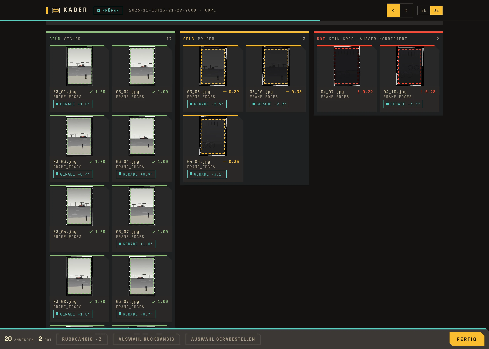
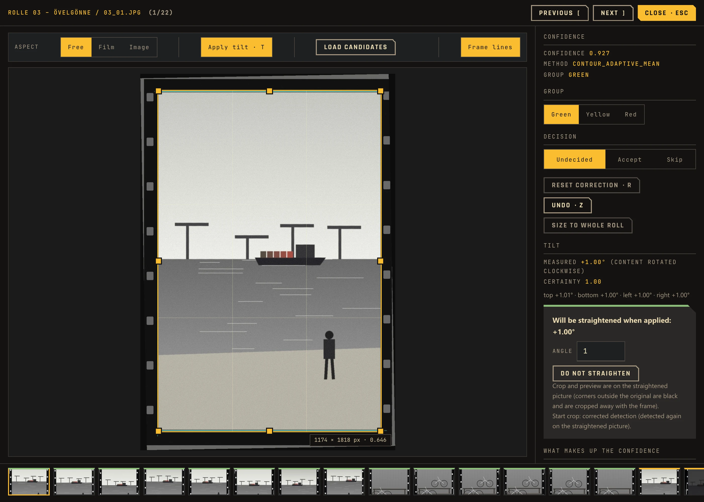
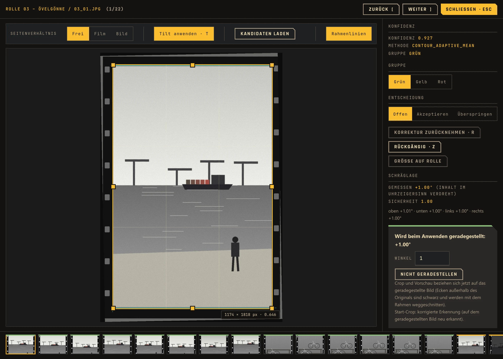
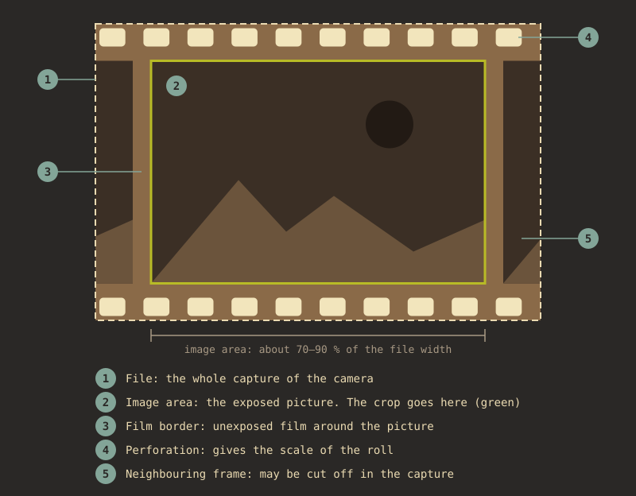
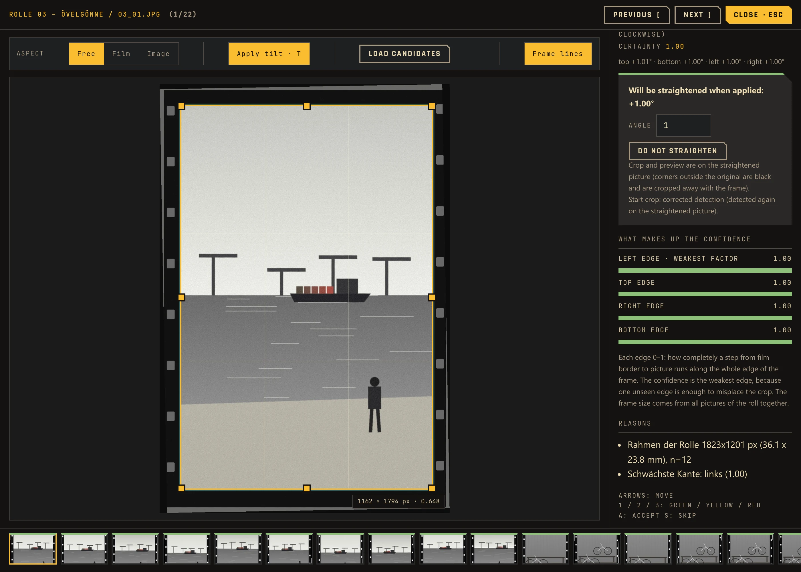
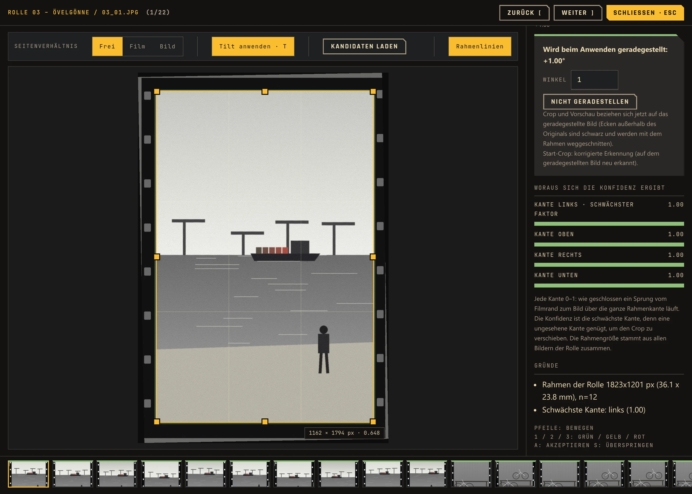
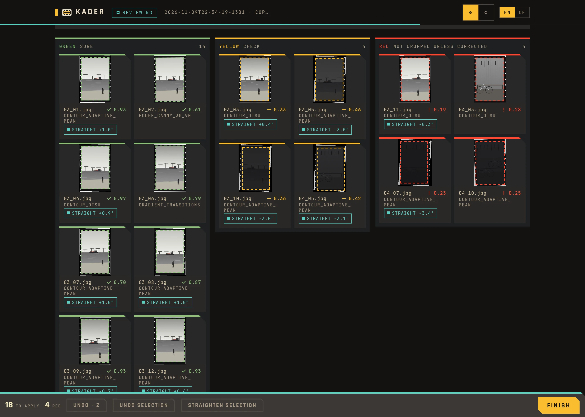

Finds the film frame
Findet den Filmrahmen
When you digitize negatives with a camera, the film strip and table stay in the picture. Kader detects the frame and suggests a crop. RAW files are developed first, JPEG, TIFF and PNG are read directly.
Beim Abfotografieren von Negativen bleiben Filmstreifen und Tisch im Bild. Kader erkennt den Rahmen und schlägt einen Zuschnitt vor. RAW-Dateien werden vorher entwickelt, JPEG, TIFF und PNG direkt gelesen.
Scale from the perforation
Maßstab aus der Perforation
Each subfolder is one roll. The hole spacing of 35 mm film gives the exact scale of the roll, and the frame size is measured from the frame edges of all its images together. Each image then only has to find its position.
Jeder Unterordner ist eine Rolle. Der Lochabstand von 35-mm-Film liefert den genauen Maßstab der Rolle, die Rahmengröße wird aus den Rahmenkanten aller Bilder gemeinsam gemessen. Jedes Bild muss dann nur noch seine Position finden.
Web UI for the check
Web-Oberfläche zur Kontrolle
Tiles sorted green, yellow and red, a crop editor with drag handles and alternative candidates, and re-detection of a selection with other settings. Accept with A, skip with S.
Kacheln nach Grün, Gelb und Rot, ein Crop-Editor mit Ziehgriffen und alternativen Kandidaten und Neu-Erkennung einer Auswahl mit anderen Einstellungen. Akzeptieren mit A, überspringen mit S.
Output where you work
Ausgabe dorthin, wo du arbeitest
Cropped copies, a crop list as JSON and CSV, darktable sidecars, RawTherapee profiles, Lightroom XMP sidecars or straight into darktable with the plugin. The web UI suggests one and explains all of them.
Zugeschnittene Kopien, eine Crop-Liste als JSON und CSV, darktable-Sidecars, RawTherapee-Profile, Lightroom-XMP-Sidecars oder mit dem Plugin direkt in darktable. Die Web-Oberfläche schlägt eins vor und erklärt alle.
Straightens tilted frames
Stellt schiefe Rahmen gerade
The detection also measures how far a frame is tilted, up to about ±9°. One key (T) straightens the image in the editor, one button a whole selection.
Die Erkennung misst auch, wie schief ein Rahmen liegt, bis etwa ±9°. Eine Taste (T) stellt das Bild im Editor gerade, ein Knopf eine ganze Auswahl.
Non-destructive
Nicht destruktiv
The scans are never changed. Sidecars are added to, not replaced. Go back to the review, change something and press Finish again: only what changed is written.
Die Scans werden nie verändert. Sidecars werden ergänzt, nicht ersetzt. Zurück zur Prüfung, etwas ändern und erneut Fertig: Geschrieben wird nur, was sich geändert hat.
Check the yellow ones, skip the rest
Prüfe die gelben, spare dir den Rest
After the detection the web UI opens in your browser. Green crops can usually stay. Yellow ones deserve a look. Red images are not cropped unless you fix or accept them, so nothing is guessed.
Nach der Erkennung öffnet sich die Web-Oberfläche im Browser. Grüne Zuschnitte können meist bleiben. Gelbe verdienen einen Blick. Rote Bilder werden nicht zugeschnitten, außer du korrigierst oder akzeptierst sie, es wird also nichts geraten.
- Each image shows which factors make up its confidence
- Change the green and yellow thresholds in the web UI if too much lands in one color
- Size to whole roll and Re-detect selection fix whole groups at once
- The label goes along to the target: as a color label in darktable, RawTherapee and Lightroom, as a
labelcolumn in the crop list
- Jedes Bild zeigt, aus welchen Faktoren sich seine Konfidenz zusammensetzt
- Ändere die Grün- und Gelb-Schwelle in der Web-Oberfläche, wenn zu viel in einer Farbe landet
- Größe auf Rolle und Auswahl neu erkennen korrigieren ganze Gruppen auf einmal
- Das Label geht mit ans Ziel: als Farblabel in darktable, RawTherapee und Lightroom, als Spalte
labelin der Crop-Liste

See what the detection found
Sieh, was die Erkennung gefunden hat
For 35 mm film, Kader measures along each of the four frame edges how completely the step from the film border to the image runs. The frame size of the roll is where these edge pairs add up over all images; an image that shows only one edge gets the other from the roll size. The confidence is the weakest of the four edges, and the editor shows all four. Other formats run four strategies side by side: contours, Hough lines, brightness gradients and a brightness mask. For a single image, the detection can write a debug image with every candidate it considered.
Bei Kleinbild misst Kader an jeder der vier Rahmenkanten, wie geschlossen der Sprung vom Filmrand zum Bild verläuft. Die Rahmengröße der Rolle liegt dort, wo sich diese Kantenpaare über alle Bilder aufsummieren; zeigt ein Bild nur eine Kante, ergibt sich die andere aus der Rollengröße. Die Konfidenz ist die schwächste der vier Kanten, der Editor zeigt alle vier. Andere Formate laufen über vier Strategien nebeneinander: Konturen, Hough-Linien, Helligkeitsverläufe und eine Helligkeitsmaske. Für ein einzelnes Bild kann die Erkennung ein Debug-Bild mit allen betrachteten Kandidaten schreiben.
- Run
python3 kader.py --debug -o out.jpg scan.jpgfor one image - The JSON output holds
x,y,width,height, the confidence and the review flag - In the web UI the crop editor offers the other candidates to pick from
- Führe
python3 kader.py --debug -o out.jpg scan.jpgfür ein einzelnes Bild aus - Die JSON-Ausgabe enthält
x,y,width,height, die Konfidenz und das Kontroll-Flag - In der Web-Oberfläche bietet der Crop-Editor die anderen Kandidaten zur Auswahl an


Works with your RAW developer
Arbeitet mit deinem RAW-Entwickler
Kader does not replace darktable or RawTherapee. It sets the crop, the straightening and a color label where they pick it up, and leaves the rest of your edit alone. None of it needs a terminal.
Kader ersetzt weder darktable noch RawTherapee. Es setzt Zuschnitt, Geradestellen und ein Farblabel dort, wo sie es übernehmen, und lässt den Rest deiner Bearbeitung in Ruhe. Nichts davon braucht ein Terminal.
- darktable plugin: the first start of the app offers to set it up. In darktable, select images, click Review starten, check in the browser, press Finish, then Plan anwenden. Good for images already in darktable.
- darktable sidecars: without the plugin, Kader adds the crop as history steps to the
.xmpnext to each image. After Finish, darktable öffnen imports the folder. Good for new rolls. - RawTherapee: Kader writes the crop into the
.pp3profiles; RawTherapee öffnen shows the folder. RawTherapee has no plugin interface, so Kader always runs first. - Existing edits stay: darktable history and
.pp3settings are added to, blue and purple labels are kept
- darktable-Plugin: Der erste Start der App bietet an, es einzurichten. In darktable Bilder auswählen, Review starten, im Browser prüfen, Fertig, dann Plan anwenden. Gut für Bilder, die schon in darktable liegen.
- darktable-Sidecars: Ohne Plugin hängt Kader den Zuschnitt als Verlaufsschritte an die
.xmpneben jedem Bild. Nach Fertig importiert darktable öffnen den Ordner. Gut für neue Rollen. - RawTherapee: Kader schreibt den Zuschnitt in die
.pp3-Profile; RawTherapee öffnen zeigt den Ordner. RawTherapee hat keine Plugin-Schnittstelle, Kader läuft also immer vorher. - Vorhandene Bearbeitungen bleiben: darktable-Verlauf und
.pp3-Einstellungen werden ergänzt, blaue und lila Labels bleiben

How it works
So funktioniert es
The detection and the web UI do not depend on any photo tool. Only the two ends are swappable: a RAW converter on the way in (only for RAW files) and a target on the way out.
Erkennung und Web-Oberfläche hängen von keinem Fotoprogramm ab. Nur die beiden Enden sind austauschbar: ein RAW-Konverter auf dem Weg hinein (nur für RAW-Dateien) und ein Ziel auf dem Weg hinaus.
- RAWs are developed at full resolution and without an existing crop; one session uses exactly one converter, so all images of a roll share the same frame
- With RAW and JPEG of the same name side by side, only the RAW counts
- Running the same folder again continues the last session: new images are added and analysed, earlier decisions stay
- The server stops after 30 minutes without activity; the session stays on disk
- RAWs werden in voller Auflösung und ohne vorhandenen Crop entwickelt; eine Sitzung nutzt genau einen Konverter, damit alle Bilder einer Rolle denselben Rahmen haben
- Liegen RAW und JPEG gleichen Namens nebeneinander, zählt nur das RAW
- Derselbe Ordner noch einmal setzt die letzte Sitzung fort: Neue Bilder werden ergänzt und analysiert, frühere Entscheidungen bleiben
- Der Server beendet sich nach 30 Minuten ohne Aktivität; die Sitzung bleibt auf der Platte
Usage
Nutzung
- Double-click the Windows or Linux package and pick the folder of scans. With Python:
kader ~/Scans/2026-09. - Wait for the detection; a small window shows the progress as a film strip. Then the web UI opens in your browser.
- At the top, pick the target: what Finish writes. One is already suggested.
- Check the yellow and red images, fix crops in the editor, straighten tilted frames.
- Press Finish. The result is written at once and shown per image at the top. The small window offers the next step: open the output folder, darktable or RawTherapee.
- Not happy? Back to review, change it and press Finish again.
- Doppelklicke das Paket für Windows oder Linux und wähle den Ordner mit den Scans. Mit Python:
kader ~/Scans/2026-09. - Warte auf die Erkennung; ein kleines Fenster zeigt den Fortschritt als Filmstreifen. Dann öffnet sich die Web-Oberfläche im Browser.
- Wähle oben das Ziel: was Fertig schreibt. Eins ist schon vorgeschlagen.
- Prüfe die gelben und roten Bilder, korrigiere Zuschnitte im Editor, stelle schiefe Rahmen gerade.
- Drücke Fertig. Das Ergebnis wird sofort geschrieben und oben je Bild angezeigt. Das kleine Fenster bietet den nächsten Schritt an: Ausgabeordner, darktable oder RawTherapee öffnen.
- Nicht zufrieden? Zurück zur Prüfung, ändern und erneut Fertig.
| OptionOption | MeaningBedeutung |
|---|---|
--target | Target, see below (default: suggested from the folder)Ziel, siehe unten (Standard: aus dem Ordner vorgeschlagen) |
--converter | darktable, rawtherapee, rawpy |
--films 33 34 | Only these rolls (subfolders)Nur diese Rollen (Unterordner) |
--new | Analyse again instead of continuingNeu analysieren statt fortsetzen |
--tui | Status display in the terminal, for a NAS or SSHStatusanzeige im Terminal, für NAS oder SSH |
--bind 0.0.0.0 | Reachable from the network (read the security note in the README first)Im Netzwerk erreichbar (vorher den Sicherheitshinweis im README lesen) |
kader check FOLDER lists the available converters and the suggested target.
kader check ORDNER zeigt die verfügbaren Konverter und das vorgeschlagene Ziel.
In the terminal: NAS and SSH
Im Terminal: NAS und SSH
Where there is no desktop, kader FOLDER --tui replaces the small window with a live status display in the terminal: session, target, the green, yellow and red counts, a progress bar during RAW export and detection, the result after Finish, and the address of the web UI in large type in the middle. Open that address in a browser on any other device.
Wo es keinen Desktop gibt, ersetzt kader ORDNER --tui das kleine Fenster durch eine laufende Statusanzeige im Terminal: Sitzung, Ziel, die Zahl der grünen, gelben und roten Bilder, ein Fortschrittsbalken bei RAW-Export und Erkennung, das Ergebnis nach Fertig und die Adresse der Web-Oberfläche groß in der Mitte. Diese Adresse öffnest du im Browser eines beliebigen anderen Geräts.
- O tries to open a browser, Q stops the server; the session stays on disk
- Add
--bind 0.0.0.0to reach the web UI from another computer in the same network; the token in the address is then the only access control, so read the security note in the README first - Needs the Python installation and the package
rich;./install.sh --standaloneinstalls it. Not available in the Windows and Linux packages, which show the small window instead
- O versucht, einen Browser zu öffnen, Q beendet den Server; die Sitzung bleibt auf der Platte
- Mit
--bind 0.0.0.0ist die Web-Oberfläche von einem anderen Rechner im selben Netz erreichbar; der Token in der Adresse ist dann die einzige Zugangskontrolle, lies deshalb vorher den Sicherheitshinweis im README - Braucht die Python-Installation und das Paket
rich;./install.sh --standaloneinstalliert es mit. In den Paketen für Windows und Linux gibt es das nicht, sie zeigen stattdessen das kleine Fenster
Targets
Ziele
| TargetZiel | WritesSchreibt | StraightensStellt gerade |
|---|---|---|
copies | Cropped copies per roll, plus the crop listZugeschnittene Kopien je Rolle, dazu die Crop-Liste | yesja |
json | crops.json and crops.csv: crop in pixels and normalised, angle, labelcrops.json und crops.csv: Crop in Pixeln und normiert, Winkel, Label | angle in the fileWinkel in der Datei |
xmp | Adobe sidecar for Lightroom and Camera Raw: crop and color label (RAWs only)Adobe-Sidecar für Lightroom und Camera Raw: Crop und Farblabel (nur RAWs) | nonein |
rawtherapee | .pp3 profile: crop and color label.pp3-Profil: Crop und Farblabel | nonein |
darktable_xmp | darktable sidecar .xmp: crop and rotation as history steps, color label; darktable reads it on importdarktable-Sidecar .xmp: Zuschnitt und Drehung als Verlaufsschritte, Farblabel; darktable liest sie beim Import | yesja |
darktable | Through the Lua plugin, as a history stepÜber das Lua-Plugin, als Verlaufsschritt | yesja |
The darktable_xmp output is checked against darktable 5.6. For images already imported into darktable, turn on look for updated XMP files on startup or use the plugin. The xmp and rawtherapee targets are not yet tested against Lightroom and RawTherapee themselves. Capture One is not supported. The limits of each target are listed in the web UI and in the README.
Die Ausgabe von darktable_xmp ist gegen darktable 5.6 geprüft. Für Bilder, die schon in darktable importiert sind, beim Start nach aktualisierten XMP-Dateien suchen einschalten oder das Plugin nehmen. Die Ziele xmp und rawtherapee sind noch nicht gegen Lightroom und RawTherapee selbst getestet. Capture One wird nicht unterstützt. Die Grenzen jedes Ziels stehen in der Web-Oberfläche und im README.
Confidence and labels
Konfidenz und Labels
| ConfidenceKonfidenz | LabelLabel | What happensWas passiert |
|---|---|---|
| 0.5 and upab 0,5 | GreenGrün | CroppedZugeschnitten |
| 0.3 up to 0.50,3 bis 0,5 | YellowGelb | Cropped, marked for reviewZugeschnitten, zur Kontrolle markiert |
| Below 0.3Unter 0,3 | RedRot | Not cropped unless you fix or accept itNicht zugeschnitten, außer du korrigierst oder akzeptierst es |
For 35 mm film the confidence is the weakest of the four frame edges, that is how clearly each edge shows in the image. An image with an edge that does not show is not green, even when the roll size places that edge. Other formats combine size agreement with the roll, edge score and exposure. The thresholds are defaults and can be changed in the web UI.
Bei Kleinbild ist die Konfidenz die schwächste der vier Rahmenkanten, also wie deutlich jede Kante im Bild zu sehen ist. Ein Bild mit einer nicht sichtbaren Kante wird nicht grün, auch wenn die Rollengröße diese Kante festlegt. Andere Formate verbinden Größenübereinstimmung mit der Rolle, Kanten-Score und Belichtung. Die Schwellen sind Standardwerte und lassen sich in der Web-Oberfläche ändern.
What the camera should capture
Was die Kamera aufnehmen soll
Kader looks for the image area: the exposed picture on the film. Its edges are where the unexposed film border ends. The film holder does not have to be in the picture.
Kader sucht das Bildfeld: das belichtete Bild auf dem Film. Seine Kanten liegen dort, wo der unbelichtete Filmrand endet. Der Filmhalter muss nicht im Bild sein.
- The film border is visible on all four sides of the image area
- At least one row of holes is in the file, ideally both
- Neighbouring frames may be cut off
- Der Filmrand ist an allen vier Seiten des Bildfelds zu sehen
- Mindestens eine Lochreihe liegt in der Datei, besser beide
- Nachbarbilder dürfen angeschnitten sein

Frame the negative so the detection can measure it
Negative so scannen, dass die Erkennung sie messen kann
The hole spacing of 35 mm film (4.7625 mm) is a physical constant. Kader uses it to work out the exact scale of a roll — but only if the perforation is actually in the scan.
Der Lochabstand von 35-mm-Film (4,7625 mm) ist eine physikalische Konstante. Kader nutzt sie, um den genauen Maßstab einer Rolle zu bestimmen — aber nur, wenn die Perforation überhaupt mit im Scan ist.
- Leave a visible margin with the holes on at least one edge, ideally both
- Don't crop tight to the image content when scanning: without perforation the scale is missing, and the frame size has to come from the edges alone
- Let the image area fill about 70–90% of the file width, so that all four of its edges are in the file
- Lass an mindestens einer Kante, besser beiden, einen sichtbaren Rand mit den Löchern stehen
- Scanne nicht randscharf bis an den Bildinhalt: Ohne Perforation fehlt der Maßstab, und die Rahmengröße muss allein aus den Kanten kommen
- Das Bildfeld soll etwa 70–90 % der Dateibreite füllen, sodass alle vier Kanten in der Datei liegen
Full guide: scan-howto.en.md · auf Deutsch: scan-howto.md
Ausführliche Anleitung: scan-howto.md · in English: scan-howto.en.md

Scan a whole roll the same way
Eine Rolle durchgängig gleich scannen
The pitch measurement sums the autocorrelation over every image of a roll, because the film sits in the same place in each scan. Keep the scanner setting and the framing the same across the roll, and scan more than a couple of images — from about twelve on, Kader can cross-check the measurement against itself.
Die Takt-Messung summiert die Autokorrelation über alle Bilder einer Rolle, weil der Film in jedem Scan an derselben Stelle liegt. Halte Scanner-Einstellung und Bildausschnitt über die ganze Rolle gleich und scanne mehr als nur ein paar Bilder — ab etwa zwölf kann Kader die Messung gegen sich selbst prüfen.
- Don't change the scanner preset partway through a roll
- Keep the film holder clean; its own pattern can be mistaken for perforation
- Single, standalone negatives work too, but capture both edges and scan sharp — there is no second half to cross-check against
- Wechsle das Scanner-Preset nicht mitten in einer Rolle
- Halte den Filmhalter sauber; sein eigenes Muster kann mit der Perforation verwechselt werden
- Auch einzelne, lose Negative funktionieren — dann aber beide Ränder erfassen und scharf scannen, denn es gibt keine zweite Hälfte zum Gegenprüfen

Detected film formats
Erkannte Filmformate
| FormatFormat | Aspect ratioSeitenverhältnis |
|---|---|
| 35 mm 135 (default)Kleinbild 135 (Standard) | 2:3 |
| Medium format 6×6Mittelformat 6×6 | 1:1 |
| Medium format 6×4.5Mittelformat 6×4,5 | 4:5 |
| Medium format 6×7Mittelformat 6×7 | 6:7 |
| Medium format 6×9Mittelformat 6×9 | 2:3 |
Where it stands
Wo es steht
The workflow is complete: folder in, web UI, six targets, darktable optional, packages for Windows and Linux. On 1373 reference crops of 35 mm film, the detection places all four edges within 25 px for about 81 % of the frames (image 2000 px long). What remains are mostly dark rolls, where film border and image are both black in the file, and frames in front of a black background.
Der Ablauf ist vollständig: Ordner hinein, Web-Oberfläche, sechs Ziele, darktable optional, Pakete für Windows und Linux. Auf 1373 Referenz-Crops von Kleinbildfilm legt die Erkennung bei etwa 81 % der Rahmen alle vier Kanten auf 25 px genau (Bild 2000 px lang). Übrig bleiben vor allem dunkle Rollen, bei denen Filmrand und Bild in der Datei beide schwarz sind, und Rahmen vor schwarzem Hintergrund.
About 96 % of the green results are right. Images whose edges do not show come out yellow or red instead of looking sure; they are not solved, only shown.
Etwa 96 % der grünen Ergebnisse stimmen. Bilder, deren Kanten nicht zu sehen sind, werden gelb oder rot, statt sicher zu wirken; gelöst sind sie nicht, nur ausgewiesen.
| NextAls Nächstes | GoalZiel |
|---|---|
| darktable on Windowsdarktable unter Windows | Check the plugin in a real darktable on Windows (so far only tested on Linux)Das Plugin in echtem darktable unter Windows prüfen (bisher nur unter Linux getestet) |
| Test the sidecarsSidecars prüfen | Check the xmp and rawtherapee output in Lightroom and RawTherapee themselvesDie Ausgabe von xmp und rawtherapee in Lightroom und RawTherapee selbst prüfen |
| Learn from feedbackAus Rückmeldungen lernen | Use the corrections made in the web UI to find where the detection failsDie Korrekturen aus der Web-Oberfläche nutzen, um zu finden, wo die Erkennung scheitert |
Calibration
Kalibrierung
The reference data comes from the same web UI with the reviews target. A reference test shows how many detected crops lie within tolerance of your hand crops, and tiles are marked hit or miss. Corrections and accepted crops are saved as ground truth.
Die Referenzdaten kommen aus derselben Web-Oberfläche mit dem Ziel reviews. Ein Referenz-Test zeigt, wie viele erkannte Crops innerhalb der Toleranz zu deinen Handcrops liegen, und Kacheln tragen die Marke Treffer oder Abweichung. Korrekturen und bestätigte Crops werden als Ground Truth gespeichert.
- Start it with
./start_review_gui.sh, or--films 33 34for single rolls - Measure with
tools/eval.py(hit rate, leave-one-film-out)
- Starte es mit
./start_review_gui.sh, oder--films 33 34für einzelne Rollen - Messen mit
tools/eval.py(Trefferquote, Leave-One-Film-Out)
Installation
Installation
Download (Windows, Linux)
Herunterladen (Windows, Linux)
No Python and no terminal. Double-click, pick the folder, and the review opens in the browser while a small window shows the progress. RAWs are developed without other programs.
Kein Python und kein Terminal. Doppelklicken, den Ordner wählen, und die Prüfung öffnet sich im Browser, während ein kleines Fenster den Fortschritt zeigt. RAWs werden ohne weitere Programme entwickelt.
- Windows: the file is not signed. On the first start Windows says “Windows protected your PC”: click More info, then Run anyway.
- Linux: make the AppImage executable once (right-click → Properties → Permissions → “Allow executing as program”, or
chmod +x Kader-*.AppImage), then double-click. - You can also drag the folder onto the file instead of using the dialog.
- Windows: Die Datei ist nicht signiert. Beim ersten Start meldet Windows „Der Computer wurde durch Windows geschützt“: auf Weitere Informationen, dann Trotzdem ausführen klicken.
- Linux: Das AppImage einmal ausführbar machen (Rechtsklick → Eigenschaften → Berechtigungen → „Als Programm ausführen“, oder
chmod +x Kader-*.AppImage), dann doppelklicken. - Statt des Dialogs kannst du den Ordner auch auf die Datei ziehen.
darktable plugin
darktable-Plugin
If darktable is installed, the first start of the app offers to set up the plugin. Close darktable first. The app copies the plugin, turns it on in the Script Manager and remembers where the app lives; if you move the app, the next start updates that. The panel in the lighttable is called Kader. Later: Kader darktable-plugin install, uninstall or status.
Ist darktable installiert, bietet der erste Start der App an, das Plugin einzurichten. darktable vorher schließen. Die App kopiert das Plugin, schaltet es im Script Manager ein und merkt sich, wo die App liegt; verschiebst du sie, trägt der nächste Start das nach. Das Modul im Leuchttisch heißt Kader. Später: Kader darktable-plugin install, uninstall oder status.
With Python
Mit Python
--standalone sets up its own environment in ~/.local/share/kader/venv with OpenCV, NumPy, Pillow and rawpy and links kader to ~/.local/bin. By hand: pip install ".[raw]". Without --standalone it installs the darktable plugin for Python; then enable contrib → Kader in the Script Manager. Only this way offers the old direct mode Detect & Queue.
--standalone richtet eine eigene Umgebung unter ~/.local/share/kader/venv mit OpenCV, NumPy, Pillow und rawpy ein und verlinkt kader nach ~/.local/bin. Von Hand: pip install ".[raw]". Ohne --standalone wird das darktable-Plugin für Python installiert; danach im Script Manager contrib → Kader einschalten. Nur dieser Weg bietet den alten Direktmodus Detect & Queue.
Questions
Fragen
Do I need darktable?Brauche ich darktable?
No. Kader runs on its own with a web UI and writes cropped copies, a crop list or sidecars. darktable is one of six targets.
Nein. Kader läuft eigenständig mit einer Web-Oberfläche und schreibt zugeschnittene Kopien, eine Crop-Liste oder Sidecars. darktable ist eines von sechs Zielen.
Plugin or sidecars in darktable?Plugin oder Sidecars in darktable?
darktable reads a sidecar only when it imports an image. For a new roll that is not in darktable yet, the sidecars are the simplest: Finish, then darktable öffnen. For images you already imported, use the plugin; it applies the crop inside darktable.
darktable liest eine Sidecar nur beim Import eines Bildes. Für eine neue Rolle, die noch nicht in darktable ist, sind die Sidecars am einfachsten: Fertig, dann darktable öffnen. Für schon importierte Bilder nimm das Plugin; es setzt den Zuschnitt in darktable selbst.
Windows warns about the file. Is it safe?Windows warnt vor der Datei. Ist sie sicher?
The warning appears because the exe is not signed; a signature costs money every year. The file is built by GitHub from the public source code, see the release workflow in the repository. Click More info → Run anyway.
Die Warnung erscheint, weil die exe nicht signiert ist; eine Signatur kostet jedes Jahr Geld. Die Datei baut GitHub aus dem öffentlichen Quelltext, siehe den Release-Workflow im Repository. Klicke Weitere Informationen → Trotzdem ausführen.
Can I trust a green label?Kann ich einem grünen Label trauen?
Mostly, but not blindly. About 96 % of the green results on the test rolls were right. Look at a sample of the green images too, especially on dark rolls, where film border and image merge.
Meistens, aber nicht blind. Etwa 96 % der grünen Ergebnisse auf den Testrollen waren richtig. Sieh dir auch von den grünen Bildern eine Stichprobe an, besonders bei dunklen Rollen, bei denen Filmrand und Bild ineinander übergehen.
Why are red images not cropped?Warum werden rote Bilder nicht zugeschnitten?
A wrong crop costs more than no crop. Below the yellow threshold Kader leaves the image alone and only labels it, unless you fix or accept it in the web UI.
Ein falscher Zuschnitt kostet mehr als kein Zuschnitt. Unter der Gelb-Schwelle lässt Kader das Bild in Ruhe und markiert es nur, außer du korrigierst oder akzeptierst es in der Web-Oberfläche.
Does it change my original files?Ändert es meine Originaldateien?
No. Copies go into a separate folder, sidecars only get the crop, rotation and color label added, and in darktable the crop is a normal history step you can undo.
Nein. Kopien landen in einem eigenen Ordner, Sidecars bekommen nur Zuschnitt, Drehung und Farblabel ergänzt, und in darktable ist der Zuschnitt ein normaler Verlaufsschritt, den du zurücknehmen kannst.
Why one roll per folder?Warum eine Rolle je Ordner?
Kader assumes a folder is one roll, shot with the same camera and distance, so the frame size is almost constant. It measures the size once per roll from all images and only solves the position per image.
Kader nimmt an, dass ein Ordner eine Rolle ist, mit gleicher Kamera und gleichem Abstand fotografiert, sodass die Rahmengröße fast konstant ist. Es misst die Größe einmal je Rolle aus allen Bildern und löst pro Bild nur die Position.
Can I run it on a NAS?Kann ich es auf einem NAS laufen lassen?
Yes. --tui shows the status in the terminal over SSH, and --bind makes the web UI reachable from another computer. Read the security note in the README before opening it to the network.
Ja. --tui zeigt den Stand per SSH im Terminal, und --bind macht die Web-Oberfläche von einem anderen Rechner aus erreichbar. Lies vor dem Öffnen ins Netzwerk den Sicherheitshinweis im README.
Why the name?Warum der Name?
In German film jargon, a “Kader” is a single frame on the film strip, exactly what the tool looks for.
„Kader“ ist Filmjargon für ein Einzelbild auf dem Filmstreifen, genau das, was das Werkzeug sucht.
Changes
Änderungen
What each release brought, newest first. Every release adds an entry here and the same notes on the release page.
Was jede Version gebracht hat, die neueste zuerst. Jede Version bekommt hier einen Eintrag und dieselben Notizen auf der Release-Seite.
-
0.5.0
The crop now sits on the frame: Kader measures the frame edges of a whole roll together, shows how sure each of the four edges is, and reads dark pictures from the RAW file.Der Crop sitzt jetzt auf dem Rahmen: Kader misst die Rahmenkanten einer ganzen Rolle gemeinsam, zeigt für jede der vier Kanten, wie sicher sie ist, und liest dunkle Bilder aus dem RAW.
NewNeu
- A scanning guide in the web UI, below the gallery: a labelled drawing shows what the camera should capture (file, image area, film border, perforation) and where the crop belongs. The same drawing is in
scan-howto.en.md, which now recommends an image area of about 70–90 % of the file width so that all four edges stay in the file.Eine Anleitung zum Scannen in der Web-Oberfläche, unter der Galerie: Eine beschriftete Zeichnung zeigt, was die Kamera aufnehmen soll (Datei, Bildfeld, Filmrand, Perforation) und wo der Crop hingehört. Dieselbe Zeichnung steht inscan-howto.md; dort gilt jetzt ein Bildfeld von etwa 70–90 % der Dateibreite als Richtwert, damit alle vier Kanten in der Datei bleiben.
ImprovedVerbessert
- The crop sits on the frame. Kader now measures, for every picture, how completely an edge from film border to picture runs along the whole frame, and adds this up over the roll: the camera's frame window is the same for every picture. On 209 hand-made crops all four edges are within about 1 % of the reference for 167 pictures instead of 109; before, a crop of the right size in the wrong place counted as found.Der Crop sitzt auf dem Rahmen. Kader misst jetzt für jedes Bild, wie geschlossen eine Kante vom Filmrand zum Bild über den ganzen Rahmen läuft, und summiert das über die Rolle: das Bildfenster der Kamera ist für jedes Bild gleich. Bei 209 Crops von Hand liegen bei 167 Bildern alle vier Kanten auf etwa 1 % genau statt bei 109; bisher galt auch ein Crop richtiger Größe an falscher Stelle als gefunden.
- Green means more. The confidence is the weakest of the four edges, so one unseen edge keeps a picture out of green. 98 % of the green crops are that exact instead of 70 %, and more pictures are green.Grün sagt mehr. Die Konfidenz ist die schwächste der vier Kanten, eine ungesehene Kante hält ein Bild also aus Grün heraus. 98 % der grünen Crops sind so genau statt 70 %, und mehr Bilder sind grün.
- A picture with a dark side keeps its frame: the unseen edge is placed by the roll's frame size from the edge that is visible. A black picture takes the usual position of the roll and is marked for review.Ein Bild mit dunkler Seite behält seinen Rahmen: die ungesehene Kante liegt um die Rahmengröße der Rolle neben der sichtbaren. Ein schwarzes Bild bekommt die übliche Lage der Rolle und wird zur Prüfung markiert.
- A single picture in another scale keeps its own edges when both are clearly visible.Ein einzelnes Bild in anderem Maßstab behält seine eigenen Kanten, wenn beide klar zu sehen sind.
- Dark pictures keep their edges when Kader gets the RAW files. A developed export can crush film border and picture into the same black; Kader now measures on its own image from the RAW, where the two are still apart, and tells negatives from slides by the roll. On three dark rolls all four edges are within about 1 % for 46 of 57 hand-made crops instead of 32. This applies to 35 mm film in the web UI and needs the Python package
rawpy; without it the export is measured as before.Dunkle Bilder behalten ihre Kanten, wenn Kader die RAW-Dateien bekommt. Ein entwickelter Export kann Filmrand und Bild ins selbe Schwarz drücken; Kader misst jetzt auf einem eigenen Bild aus dem RAW, in dem beide noch getrennt sind, und unterscheidet Negativ und Dia an der Rolle. Auf drei dunklen Rollen liegen bei 46 von 57 Crops von Hand alle vier Kanten auf etwa 1 % genau statt bei 32. Das gilt für Kleinbild in der Web-Oberfläche und braucht das Python-Paketrawpy; ohne es wird wie bisher der Export gemessen. - The editor shows the four edges as the factors of the confidence.Der Editor zeigt die vier Kanten als Faktoren der Konfidenz.
- A roll is analysed about twice as fast again.Eine Rolle wird noch einmal etwa doppelt so schnell analysiert.
NoteHinweis
- Other formats than 35 mm and rolls without usable edges are detected as before.Andere Formate als Kleinbild und Rollen ohne brauchbare Kanten werden wie bisher erkannt.
- Kader no longer learns a preferred crop size from hand-set crops. The crop sits 0.5 % of the frame's long side inside the measured edge; a stored
convention.jsonis no longer read.Kader lernt keine bevorzugte Crop-Größe mehr aus von Hand gesetzten Crops. Der Crop liegt 0,5 % der langen Rahmenkante innerhalb der gemessenen Kante; eine gespeicherteconvention.jsonwird nicht mehr gelesen.
All changes since 0.4.0 →Alle Änderungen seit 0.4.0 →

The four edges in the editorDie vier Kanten im Editor Crops on the frameCrops auf dem Rahmen - A scanning guide in the web UI, below the gallery: a labelled drawing shows what the camera should capture (file, image area, film border, perforation) and where the crop belongs. The same drawing is in
-
0.4.0
Faster and in a new look: a roll is detected about 4.7 times as fast, and the review in the browser uses the Kante design, also on a phone.Schneller und in neuem Gewand: Eine Rolle ist etwa 4,7-mal so schnell erkannt, und die Prüfung im Browser nutzt das Kante-Design, auch auf dem Handy.
ImprovedVerbessert
- Detection is about 4.7 times as fast: the test rolls took 58 seconds and now take about 12, with the same or slightly better hits (reference crops 1453 → 1467 of 1662). The line search runs on half the resolution, and each analysis process uses one thread instead of all cores at once.Die Erkennung ist etwa 4,7-mal so schnell: Die Testrollen brauchten 58 Sekunden und jetzt etwa 12, mit gleichen oder etwas besseren Treffern (Referenz-Crops 1453 → 1467 von 1662). Die Liniensuche läuft auf halber Auflösung, und jeder Analyseprozess nutzt einen Thread statt aller Kerne zugleich.
- The web UI uses the Kante design: clearer labels, counts and progress, and dragging an image between green, yellow and red shows where it lands. The status window and the terminal display take the same colours.Die Web-Oberfläche nutzt das Kante-Design: klarere Labels, Zahlen und Fortschritt, und beim Ziehen eines Bildes zwischen Grün, Gelb und Rot sieht man, wo es landet. Statusfenster und Terminal-Anzeige übernehmen dieselben Farben.
- On a phone the page no longer scrolls sideways, the action bar keeps out of the way of the content and messages, and the crop editor opens at the top with the whole picture.Auf dem Handy scrollt die Seite nicht mehr seitwärts, die Aktionsleiste verdeckt weder Inhalt noch Meldungen, und der Zuschnitt-Editor öffnet oben mit dem ganzen Bild.
FixedBehoben
- The straighten switch (key T) did nothing on an image without a measured tilt. It is now off there, and T says there is no tilt.Der Schalter zum Geradestellen (Taste T) tat bei einem Bild ohne gemessene Neigung nichts. Dort ist er jetzt aus, und T meldet, dass es keine Neigung gibt.
All changes since 0.3.0 →Alle Änderungen seit 0.3.0 →
The review in the Kante designDie Prüfung im Kante-Design Detection time, test rollsErkennungszeit, Testrollen -
0.3.0
darktable and RawTherapee without a terminal: Kader writes darktable's sidecars itself, sets up its darktable plugin from the app and opens the editor when it is done.darktable und RawTherapee ohne Terminal: Kader schreibt die Sidecars von darktable selbst, richtet sein darktable-Plugin aus der App ein und öffnet nach dem Abschluss das Programm.
NewNeu
- New target "darktable sidecars" (
darktable_xmp): writes crop, rotation and colour label straight into darktable's<file>.xmp, without the plugin and without darktable running. Existing edits stay. Kader suggests it when the folder already has darktable sidecars, names images darktable has already imported (it reads the XMP only on import) and warns when darktable is running.Neues Ziel „darktable-Sidecars“ (darktable_xmp): schreibt Zuschnitt, Drehung und Farblabel direkt in die<datei>.xmpvon darktable, ohne Plugin und ohne laufendes darktable. Vorhandene Bearbeitungen bleiben. Kader schlägt es vor, wenn im Ordner schon darktable-Sidecars liegen, nennt Bilder, die darktable schon importiert hat (es liest die XMP nur beim Import), und warnt, wenn darktable läuft. - Set up the darktable plugin from the app: the first double click offers it when darktable is installed (or
Kader darktable-plugin install|uninstall|status). The plugin then starts Kader through the app instead of Python.Das darktable-Plugin aus der App einrichten: Der erste Doppelklick bietet es an, wenn darktable installiert ist (oderKader darktable-plugin install|uninstall|status). Das Plugin startet Kader dann über die App statt über Python. - After "Done", the status window offers "Open RawTherapee" or "Open darktable" (also as Flatpak) for those targets, with a hint on what happens there.Nach „Fertig“ bietet das Statusfenster bei diesen Zielen „RawTherapee öffnen“ bzw. „darktable öffnen“ (auch als Flatpak), mit einem Hinweis, was dort passiert.
ImprovedVerbessert
- The darktable plugin runs on Windows too (processes, browser, paths and temporary files through
cmd.exe).Das darktable-Plugin läuft auch unter Windows (Prozesse, Browser, Pfade und temporäre Dateien übercmd.exe). darktable-cliandrawtherapee-cliare found in their usual install folders on Windows and macOS; programs started from the exe or AppImage no longer inherit the package's library paths, and Windows opens no console window per image.darktable-cliundrawtherapee-cliwerden unter Windows und macOS in ihren üblichen Installationsordnern gefunden; aus exe oder AppImage gestartete Programme erben nicht mehr die Bibliothekspfade des Pakets, und Windows öffnet kein Konsolenfenster je Bild.
FixedBehoben
- The exe without a console crashed when it ran with arguments (such as
servefrom the plugin) and no output.Die exe ohne Konsole stürzte ab, wenn sie mit Argumenten (etwaserveaus dem Plugin) und ohne Ausgabe lief.
All changes since 0.2.0 →Alle Änderungen seit 0.2.0 →NoteHinweis
- The darktable plugin is not yet checked in a real darktable on Windows.Das darktable-Plugin ist unter Windows noch nicht in echtem darktable geprüft.
- New target "darktable sidecars" (
Older releasesÄltere Versionen
-
0.2.0
Kader works on its own: point it at a folder of scanned negatives, check the crops in the browser and write them for the tool you use, darktable no longer required. Double-click packages for Windows and Linux need no Python and no terminal, and the detection got much more accurate and more honest about its confidence.Kader arbeitet eigenständig: einen Ordner mit abfotografierten Negativen wählen, die Crops im Browser prüfen und für das eigene Programm schreiben, darktable ist nicht mehr nötig. Doppelklick-Pakete für Windows und Linux brauchen kein Python und kein Terminal, und die Erkennung ist deutlich genauer und ehrlicher in ihrer Konfidenz.
NewNeu
kader FOLDER: scans the folder (subfolders are rolls, RAWs included), analyses it and opens the web UI; "Done" applies the result at once. Running it again resumes the session and adds images that were added to the folder.kader ORDNER: durchsucht den Ordner (Unterordner sind Rollen, RAWs eingeschlossen), analysiert ihn und öffnet die Web-Oberfläche; „Fertig“ wendet das Ergebnis sofort an. Ein erneuter Aufruf setzt die Sitzung fort und ergänzt Bilder, die neu im Ordner liegen.- Targets: cropped copies (straightened if wanted, ICC/EXIF and 16 bit kept),
crops.json/crops.csv, XMP sidecars for Lightroom/Camera Raw, RawTherapee profiles (.pp3), and darktable as before. Kader suggests one from the sidecars already in the folder; a panel in the web UI explains each and shows which images a target would not write. Only what changed is written again.Ziele: zugeschnittene Kopien (auf Wunsch geradegestellt, ICC/EXIF und 16 Bit bleiben),crops.json/crops.csv, XMP-Sidecars für Lightroom/Camera Raw, RawTherapee-Profile (.pp3) und darktable wie bisher. Kader schlägt eins nach den Sidecars im Ordner vor; ein Bereich in der Web-Oberfläche erklärt jedes und zeigt, welche Bilder ein Ziel nicht schreiben würde. Geschrieben wird nur, was sich geändert hat. - RAW converters: darktable, RawTherapee or rawpy (no extra program needed).RAW-Konverter: darktable, RawTherapee oder rawpy (kein weiteres Programm nötig).
- Double-click packages:
Kader-…-windows-x64.exeandKader-…-x86_64.AppImage; without an argument a dialog asks for the folder, and a small status window shows progress and the result.Doppelklick-Pakete:Kader-…-windows-x64.exeundKader-…-x86_64.AppImage; ohne Argument fragt ein Dialog nach dem Ordner, und ein kleines Statusfenster zeigt Fortschritt und Ergebnis. --tui: a status display in the terminal for a NAS over SSH;--bind: reach the web UI from another machine in the network, protected by the session token.--tui: eine Statusanzeige im Terminal für ein NAS per SSH;--bind: die Web-Oberfläche von einem anderen Rechner im Netz erreichen, geschützt durch das Token der Sitzung.- Tilt: Kader measures how skewed a frame is, shows it, straightens it by default when the measurement is reliable and passes the rotation on to the target; a switch (key T) turns it off per image.Schräglage: Kader misst, wie schief ein Rahmen liegt, zeigt es, stellt ihn bei verlässlicher Messung standardmäßig gerade und gibt die Drehung an das Ziel weiter; ein Schalter (Taste T) schaltet das je Bild ab.
- "Size to roll" in the crop editor carries a corrected crop's size over to the other images of the roll.„Größe auf Rolle“ im Crop-Editor überträgt die Größe eines korrigierten Crops auf die übrigen Bilder der Rolle.
- The editor shows what the confidence is made of, with the weakest factor highlighted.Der Editor zeigt, woraus sich die Konfidenz ergibt, der schwächste Faktor hervorgehoben.
ImprovedVerbessert
- The crop size comes from the film's perforation (a fixed 4.7625 mm pitch) where the scan shows it: on 62 test rolls the hit rate rose from about 63 % to about 87 %.Die Crop-Größe kommt aus der Perforation des Films (fester Lochabstand 4,7625 mm), wo der Scan sie zeigt: Auf 62 Testrollen stieg die Trefferquote von etwa 63 % auf etwa 87 %.
- The confidence is more honest: a roll whose scale cannot be confirmed is marked down as a whole, so about 96 % of green results are right.Die Konfidenz ist ehrlicher: Eine Rolle, deren Maßstab sich nicht bestätigen lässt, wird als Ganzes abgewertet, so stimmen etwa 96 % der grünen Ergebnisse.
- The frame orientation comes from the image, and the local fit stays closer to the roll's size.Die Ausrichtung des Rahmens kommt aus dem Bild, und das lokale Einpassen bleibt näher an der Größe der Rolle.
- A port in use is no longer an error: Kader takes the next free one and says so.Ein belegter Port ist kein Fehler mehr: Kader nimmt den nächsten freien und sagt das.
FixedBehoben
- Windows: a second Kader could run on the same session unnoticed and overwrite corrections; a session is now locked on every platform.Windows: Ein zweites Kader konnte unbemerkt auf derselben Sitzung laufen und Korrekturen überschreiben; eine Sitzung ist jetzt auf jedem System gesperrt.
- Windows: checking whether darktable still ran sent it Ctrl+C.Windows: Die Prüfung, ob darktable noch läuft, schickte ihm Strg+C.
- A second
openwith new images could lose them to the running server.Ein zweitesopenmit neuen Bildern konnte sie an den laufenden Server verlieren. --bind ::(IPv6) crashed on start, and--port 80always answered 403.--bind ::(IPv6) stürzte beim Start ab, und--port 80antwortete immer mit 403.- Rejected requests kept the server from stopping when idle.Abgewiesene Anfragen hielten den Server davon ab, sich bei Leerlauf zu beenden.
- A retry during a running re-detection could leave the session stuck in "analysing".Ein erneuter Versuch während einer laufenden Neu-Erkennung konnte die Sitzung in „Analyse“ festhalten.
- The LAN address shown with
--bind 0.0.0.0could be a VPN or Docker interface instead of the real network.Die bei--bind 0.0.0.0gezeigte LAN-Adresse konnte die eines VPN- oder Docker-Netzes sein statt die des echten Netzes.
All changes since 0.1 →Alle Änderungen seit 0.1 →NoteHinweis
- Not yet checked in the real programs: RawTherapee export and
.pp3profiles, and Lightroom crop coordinates.Noch nicht in den echten Programmen geprüft: RawTherapee-Export und.pp3-Profile sowie Lightroom-Crop-Koordinaten. - The packages are not signed; Windows warns on the first start.Die Pakete sind nicht signiert; Windows warnt beim ersten Start.
-
0.1
The first version with the companion web UI: detection runs in a local web page, you check and correct the crops there and hand them to darktable.Die erste Version mit der Companion-Web-Oberfläche: Die Erkennung läuft in einer lokalen Webseite, dort prüfst und korrigierst du die Crops und gibst sie an darktable weiter.
NewNeu
- Web UI on
127.0.0.1: gallery grouped green, yellow and red with crop overlays, drag and drop, multi-select, keyboard shortcuts, a crop editor with handles, aspect lock and candidates, re-detection of a selection as a suggestion, two undo levels, German and English, dark and light.Web-Oberfläche auf127.0.0.1: Galerie nach Grün, Gelb und Rot mit Crop-Overlays, Drag-and-drop, Mehrfachauswahl, Tastenkürzel, ein Crop-Editor mit Ziehgriffen, Seitenverhältnis-Sperre und Kandidaten, Neu-Erkennung einer Auswahl als Vorschlag, zwei Undo-Ebenen, Deutsch und Englisch, dunkel und hell. - Hand-over: "Done" locks the view and writes the plan; only then does "Apply plan" in darktable take effect. "Back to review" unlocks it again, and applying again changes only the difference.Übergabe: „Fertig“ sperrt die Ansicht und schreibt den Plan; erst dann wirkt „Plan anwenden“ in darktable. „Zurück zur Prüfung“ entsperrt wieder, und erneutes Anwenden ändert nur die Differenz.
- Export from darktable in full resolution, without an existing crop and without changing the XMP.Export aus darktable in voller Auflösung, ohne vorhandenen Crop und ohne die XMP zu ändern.
- darktable plugin buttons: Start review, Apply plan, Open review, Stop server, Reset crop and colours; a server indicator with a clickable URL.Knöpfe im darktable-Plugin: Review starten, Plan anwenden, Prüfung öffnen, Server stoppen, Crop & Farben zurücksetzen; eine Serveranzeige mit klickbarer URL.
- The server stops when darktable closes and after 30 minutes without activity in the web UI.Der Server stoppt beim Schließen von darktable und nach 30 Minuten ohne Aktivität in der Web-Oberfläche.
- Folder mode without darktable (
python -m companion serve --folder …).Ordnermodus ohne darktable (python -m companion serve --folder …).
FixedBehoben
- The status display in the plugin hit the undo button instead of its own widget.Die Statusanzeige im Plugin traf den Undo-Knopf statt ihres eigenen Widgets.
- No more markup tags in the plugin's labels (darktable does not render them).Keine Markup-Tags mehr in den Beschriftungen des Plugins (darktable stellt sie nicht dar).
NoteHinweis
- The darktable part is tested against a stub of the darktable API, not yet fully in a real darktable, and not yet with real RAWs in a real library.Der darktable-Teil ist gegen einen Stub der darktable-API getestet, noch nicht vollständig in echtem darktable und noch nicht mit echten RAWs in einer echten Bibliothek.
- Web UI on